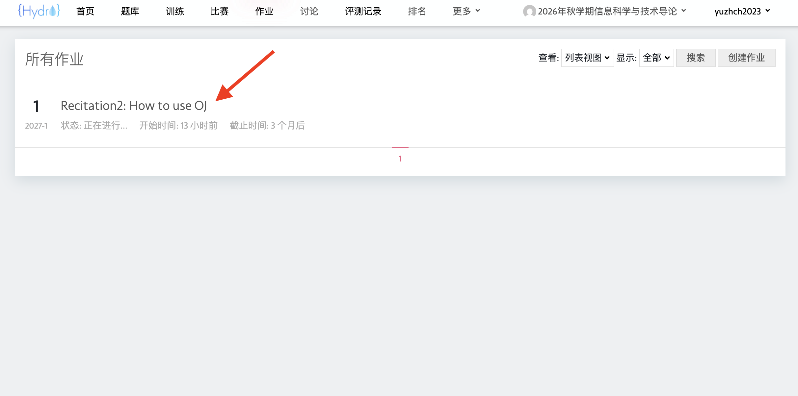
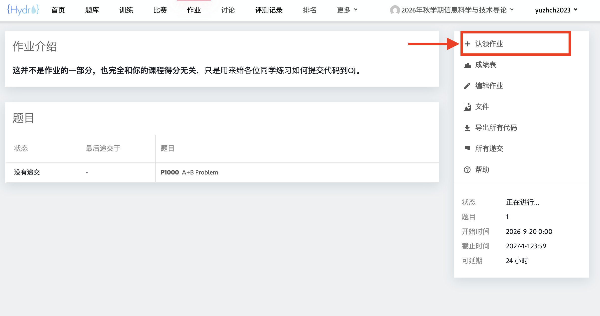
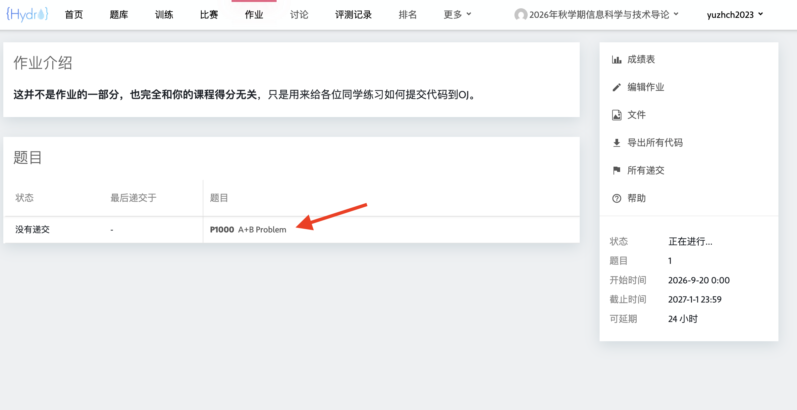
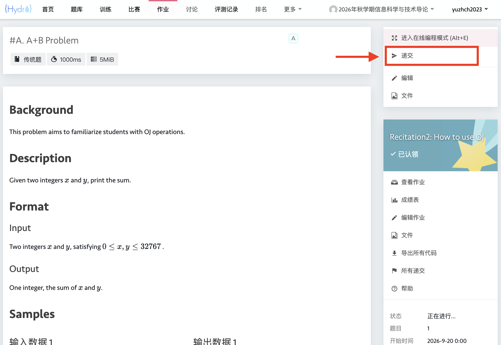
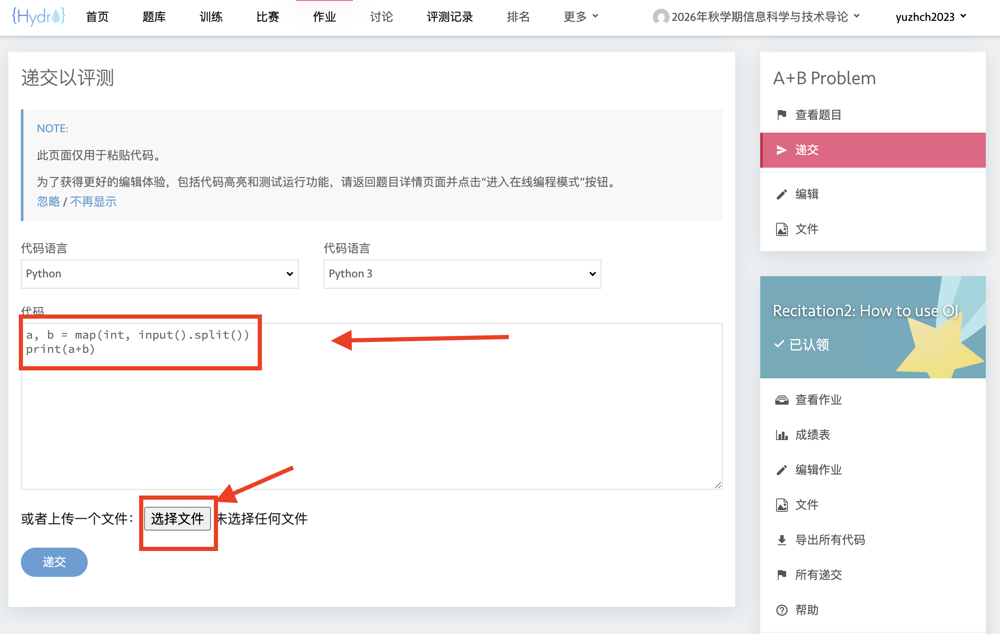
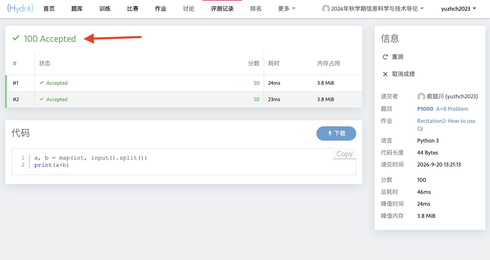
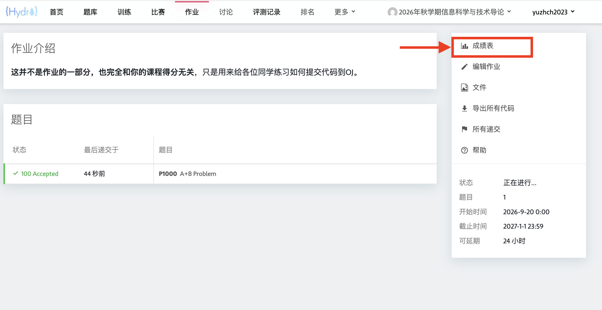
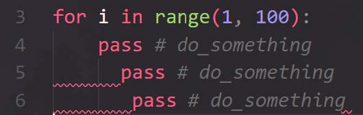

<p style="font-size: 16px; color: #999; margin:5px; position: absolute;"><a href="..">Homepage</a> | <a href="?print-pdf">Printable Version</a></p> <div style="display: flex; justify-content: center; align-items: center; height: 700px;"> <div style="text-align: center; padding: 40px; background-color: white; border: 2px solid rgb(0, 63, 163); border-radius: 20px; box-shadow: 0 0 20px rgba(0,0,0,0.1);"> <h1 style="font-size: 48px; font-weight: bold; margin-bottom: 20px; color: #333;">SI100B Fall 2026 Recitation 2</h1> <p style="font-size: 24px; color: #666;">How to use OJ</p> <p style="font-size: 16px; color: #999; margin-top: 20px; margin-bottom:5px">SI100B 2026 Staff | 2026-09-20</p> </div> </div> <!--s--> <div class="middle center"><div style="width: 100%"> # Homework & Online Judge </div></div> <!--v--> ## Homework & Online Judge - Homework 1 下周三0点发布 - 截止日期 (Deadline) 10 月 6 日 21:00（另留有 15 分钟缓冲） - **不允许迟交和截止后提交**；如有特殊情况，请单独联系老师并提供佐证材料 - OJ 地址: [http://10.15.21.133/d/SI100B_2026_Autumn/](http://10.15.21.133/d/SI100B_2026_Autumn/) - 该地址为学校内网，如想在校外访问，请先使用上科大 VPN 来访问学校内网（具体可在 egate 平台上查询）。 - 账号：我们为每一位同学用学校邮箱提前注册了账号，如zhangsan2026@shanghaitech.edu.cn，用户名为zhangsan2026 - 首次使用时，请点击**忘记密码**，用自己的邮箱设置新密码 <!--v--> ## 找到作业 <p></p> <!--v--> ## 认领作业 <p></p> <!--v--> ## 打开题目 <p></p> <!--v--> ## 点击递交 <p></p> <!--v--> ## 选择提交方式 <p></p> <!--v--> ## 等待结果 <p></p> <!--v--> ## 查看成绩 <p></p> <!--v--> ## 参考操作流程 - 给自己在合适的位置新建一个 `SI100B` 的目录，通过 `uv init` 来初始化项目。 - 在目录下新建一个 `Homework0`，用 VS Code 打开这个目录。 - 在目录下新建 `P1001.py` 并打开，在 VS Code 中编写代码，及时保存。 - 通过 `uv run P1001.py` 运行 Python 脚本，输入样例检查输出结果。 - 复制到 OJ 上进行提交。 <!--v--> ## 作业评分和学术诚信提示 - 学生在某道题目的得分**仅取决于学生在此题目上<u>最后一次提交的程序得分</u>** - 实际作业分数为：在当次作业**截止时间前**，在 OJ 系统上**提交并评测完成后**显示的作业分数 - 注：不接受任何除 OJ 系统之外的作业提交 - 对作业中**所有**提交过的程序查重，不仅仅是每道题目的最后一次提交 - 禁止使用 AI 工具生成作业代码 - 保护好自己的代码！ - 无法界定谁抄袭和谁被抄袭，涉及的双方均会受到同等惩罚 <!--s--> <div class="middle center"><div style="width: 100%"> # Coding Style </div></div> <!--v--> ## 为什么要有良好的代码风格？ > There are only two hard things in Computer Science: cache invalidation and naming things. > > ---Phil Karlton - 方便自己检查 bug - 方便合作者阅读代码 - 阅读/写出赏心悦目的代码能让人心情愉悦 <!--v--> ## 遵循 PEP 8 规范 Python 创建了一个官方的编码风格规范：[PEP 8](https://peps.python.org/pep-0008/)，以保持不同开发者编写的代码风格的一致性。 1. 使用4个空格进行缩进。 2. 每行不超过79个字符。 3. 变量命名约定： - 对于普通变量，使用蛇形命名法，例如：max_value. - 对于常量，使用全大写字母，并使用下划线连接，例如：MAX_VALUE。 - 对于仅供内部使用的变量，在其前面添加下划线前缀，例如：_local_var。 - 对于与 Python 关键字冲突的变量名，在变量末尾添加下划线，例如：class_。 <!--v--> ## 使用格式化工具：Ruff - [Ruff](https://docs.astral.sh/ruff/) 是一个快速的 Python 代码检查与格式化工具，可以自动统一缩进、空格和换行等代码风格。 - 在 Ruff 之前，Black 是最常用的格式化器，采用 PEP 8 原则的同时，制定了一套确定性的格式规则。 - Ruff 基本兼容 Black（格式化），Flake8（代码检查）和 isort（import排序）的功能。 - 在工具中安装 Ruff，并格式化当前目录下的 Python 代码： ```bash uv tool install ruff@latest ruff format . ``` - 只检查代码是否需要格式化，而不修改文件：`ruff format --check .` - VS Code 也可安装 Ruff 插件，通过“格式化文档”或“保存时格式化”自动整理代码。 - 格式化工具只负责统一排版；清晰的命名、合理的注释仍需由程序员完成。 <!--v--> ## 描述性的变量名 - 代码大量使用描述性较弱的变量名，读者将很难理解代码的含义。例如 <div style=" margin-top: 10px; margin-right: 20px; margin-left: 20px" markdown="1"> | weakly descriptive | strong descriptive | |:---:|:---:| | data | file_chunks | | temp | pending_id | | result | active_menber | </div> - 一些特殊情况： - 数组索引 `i,j,k` - 一些整数 `n` - 一个临时字符串 `s` - 一个异常 `e` - 文件对象 `fp` <!--v--> ## 两种最常见的命名规范 - 驼峰命名法（Camel Case）：第一个单词首字母小写，其余单词首字母答谢，此法常用于方法名: - firstName - findLocation - 下划线命名法（Snake Case）：所有单词用下划线连接。 - first_name - find_location <!--v--> ## 善用空格 - 肉眼可利用空格快速区分代码的不同部分 - 在二元运算符（如`+`、`-`、`==`、`>` 和`=`）前后使用空格，明确区分运算符和操作数。例如：`1 + 1`，`ans += 1` - 在 “,” 后使用空格。例如：`func(a, b, c)` <!--v--> ## 缩进 - 可以选择使用 4 个空格（PEP8 规范）、2个空格（Google style）或 1个 tab 作为缩进方式。 - 必须在所有代码中保持相同的缩进方式 <p></p> <!--v--> ## 减少无意义注释（Comment） - 没有编译器或者解释器的相助，编写和维护注释需要更多的时间成本 - 试图通过更好的命名替代注释 ```python # HTTP response code indicates can't find the requested resource if stauts_code == 404: ... ``` ```python HTTP_NOT_FOUND = 404 if stauts_code == HTTP_NOT_FOUND: ... ``` <!--s--> <div class="middle center"><div style="width: 100%"> # 答疑时间 </div></div> <!--s--> <div style="display: flex; justify-content: center; align-items: center; height: 700px; "> <div style="text-align: center; padding: 40px; background-color: white; border-radius: 20px; box-shadow: 0 0 20px rgba(0,0,0,0.1);"> <div style="display: inline-block; padding: 20px 40px; border-radius: 10 px; margin-bottom: 20px;"> <h1 style="font-size: 48px; font-weight: bold; margin: 0; color: rgb(16, 33, 89)">Thanks for Listening</h1> </div> <p style="font-size: 24px; color: #666; margin: 0;">Any questions?</p> </div> </div>